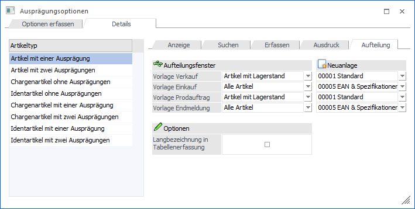
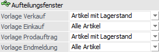
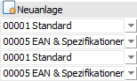
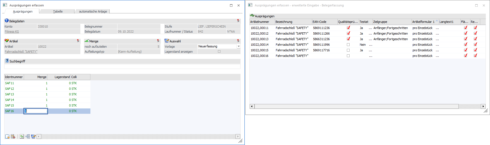
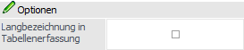

In dem Unterregister "Aufteilung" kann u.a. hinterlegt werden, bei welchem Artikeltyp welche Vorlage für die Bearbeitung in dem Fenster "Ausprägungen erfassen" herangezogen werden sollen.

Aufteilungsfenster

In diesem Bereich kann die Vorlage, welche in dem Fenster "Ausprägungen erfassen" verwendet werden soll, definiert werden.
Hinweis
Mit Hilfe einer Vorlage kann u.a. gesteuert werden, ob die Neuanlage von Ausprägungen gestattet ist oder ob nur Ausprägungen mit Lagerstand angezeigt werden sollen. Die Anlage solcher Vorlagen erfolgt im Register Vorlagen des Programms Ausprägungen initialisieren.
Ø Vorlage Verkauf
An dieser Stelle kann die Vorlage für den Verkaufsbereich definiert werden. Hierzu zählen folgende Punkte:
ü Belegerfassung Verkauf
ü Lagerbuchungsschlüssel V+, P+, L- in der Lagerbuchhaltung
ü Inventur
ü Kundenbestellungen bearbeiten
Ø Vorlage Einkauf
An dieser Stelle kann die Vorlage für den Einkaufsbereich definiert werden. Hierzu zählen folgende Punkte:
ü Belegerfassung Einkauf
ü Lagerbuchungsschlüssel V-, P-, L+ in der Lagerbuchhaltung
ü Lieferantenlieferungen aufteilen
Ø Vorlage Prodauftrag
An dieser Stelle kann die Vorlage für einen Teil des Produktions- und Stücklistenbereichs definiert werden. Hierzu zählen folgende Punkte:
ü Belegerfassung - Handelsstücklistenfenster
ü Produktionsvorbereitung
ü Produktionskorrektur
Ø Vorlage Endmeldung
An dieser Stelle kann die Vorlage für einen Teil des Produktionsbereichs definiert werden. Hierzu zählt folgender Punkt:
ü Produktionsendmeldung
Neuanlage

Wird über das Fenster "Ausprägungen erfassen" eine neue Ausprägung angelegt, so kann in der Regel "nur" die neue Ident- oder Chargennummer frei vergeben werden. Alle weitere Stammdatenfelder müssen im Nachhinein gepflegt werden.
Durch die Hinterlegung einer EXIM-Vorlage des Typs "Artikel" im Bereich "Neuanlage" wird bei der Erfassung einer neue Ausprägung (nach der Mengeneingabe) das Fenster Ausprägungen erfassen - erweiterte Eingabe geöffnet, in welchem die Stammdatenfelder gemäß Vorlage angezeigt und hinterlegt werden können (ähnlich dem "Stammdaten editieren").
Hinweise
Das Fenster wird separat zu dem Fenster "Ausprägungen erfassen" geöffnet und beinhaltet alle neuen Ausprägungen, bei denen eine Menge erfasst wurde (nur dann werden die Ausprägung auch wirklich angelegt). Die Spalten des Fensters stammen aus der hinterlegten EXIM-Vorlage, wobei auch Vorbelegung unterstützt werden, sofern die Felder angezeigt werden.
Bei der Batcherfassung von Belegen, dem Batchbeleg, dem XML Import und der Neuanlage von Ausprägungen steht die Funktion der erweitern Eingabe nicht zur Verfügung.
Achtung
Haben z.B. die Ausprägungen den Textstamm vom Hauptartikel und ein Feld aus dem Bereich "Text" ist in der Vorlage enthalten, so wird der Text vorbelegt und kann nicht editiert werden.
Beispiel

Ø Vorlage Verkauf
An dieser Stelle kann die EXIM-Vorlage für den Verkaufsbereich hinterlegt werden. Hierzu zählen folgende Punkte:
ü Belegerfassung Verkauf
ü Lagerbuchungsschlüssel V+, P+, L- in der Lagerbuchhaltung
ü Inventur
ü Kundenbestellungen bearbeiten
Ø Vorlage Einkauf
An dieser Stelle kann die EXIM -Vorlage für den Einkaufsbereich hinterlegt werden. Hierzu zählen folgende Punkte:
ü Belegerfassung Einkauf
ü Lagerbuchungsschlüssel V-, P-, L+ in der Lagerbuchhaltung
ü Lieferantenlieferungen aufteilen
Ø Vorlage Prodauftrag
An dieser Stelle kann die EXIM-Vorlage für einen Teil des Produktions- und Stücklistenbereichs hinterlegt werden. Hierzu zählen folgende Punkte:
ü Belegerfassung - Handelsstücklistenfenster
ü Produktionsvorbereitung
ü Produktionskorrektur
Ø Vorlage Endmeldung
An dieser Stelle kann die Vorlage für einen Teil des Produktionsbereichs definiert werden. Hierzu zählt folgender Punkt:
ü Produktionsendmeldung
Optionen

Ø Langbezeichnung in Tabellenerfassung
In der Ausprägungstabelle des Fensters "Ausprägungen erfassen" (Register "Tabelle") werden alle Ausprägungen gemäß der verwendeten Vorlage angezeigt. Ob dabei die Ausprägungskurzbezeichnung (auch "Kurzcode" oder "Kennzahl" genannt) oder die Ausprägungsbezeichnung für die Anzeige genutzt wird, kann an dieser Stelle definiert werden.